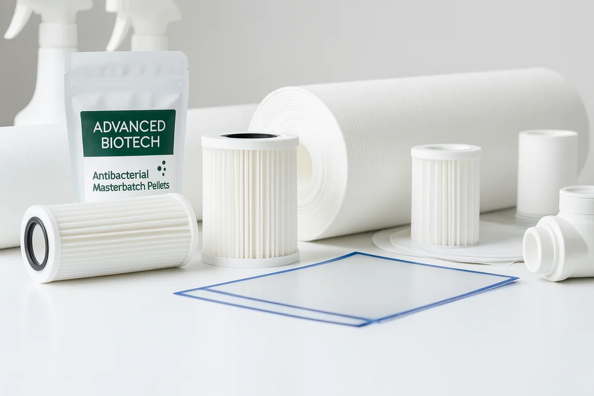
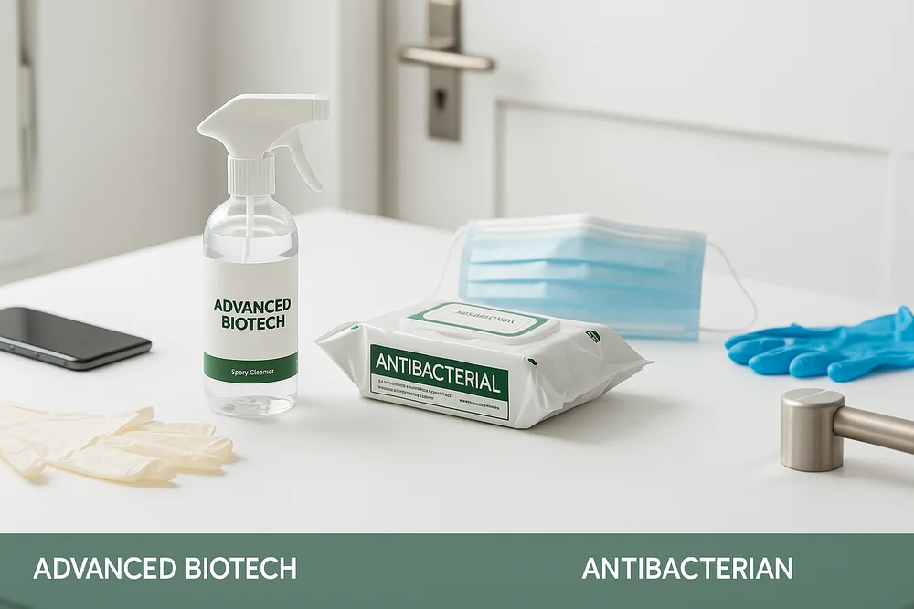
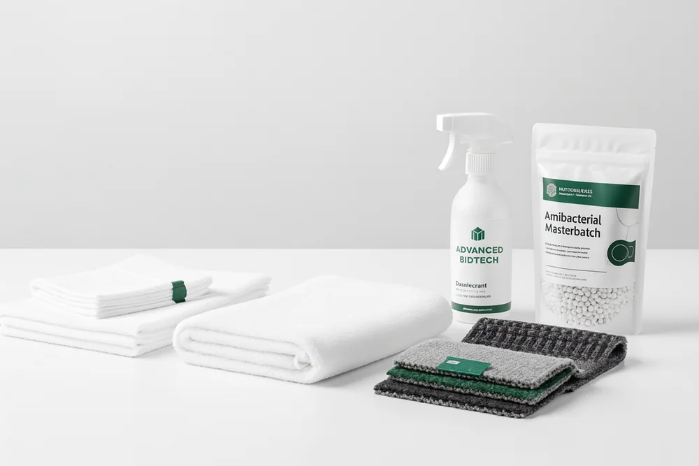

OUR SOLUTIONS / YOUR INDUSTRY
Better protection.
Across industries.
Custom antibacterial and antiviral technologies designed for your business. Molecular design, adapted to the way you work.
Innovative antimicrobial solutions across multiple industries. Using our molecular design technology, we deliver customizable antimicrobial solutions for a wide range of applications—including antibacterial, antiviral, antifungal, and anti-mite protection.

0101INDUSTRY SOLUTIONS
Water Purification
Sustainable Water Treatment Powered by Advanced Antibacterial Polymer Technology.
Advanced Biotech develops eco-friendly water purification systems designed to enhance water quality through large-molecule antibacterial polymers. Our solutions deliver safe, efficient, and sustainable performance across multiple applications.
Disaster Relief
Our mobile water purification units can produce safe drinking water within 30 minutes — without chemicals or external power — making them ideal for use after earthquakes, floods, and other emergencies.
Aquaculture
Non-silver, non-eluting antibacterial filters help maintain clean, stable water quality, supporting healthy fish growth and long-term, sustainable aquaculture operations.
Urban and Environmental Water Systems
Solar-powered, automated filtration systems prevent bacterial and biofilm buildup in rivers and drainage channels, preserving clean water and restoring natural balance with minimal energy use.

0202INDUSTRY SOLUTIONS
Disinfection & Cleaning
We develop customized disinfection and cleaning solutions using our antibacterial master liquid, tailored for specific environments, surfaces, and equipment. Each formulation balances strong antimicrobial performance with safety for people and materials.
Public Spaces
Ideal for high-contact areas such as door handles, handrails, tables, and counters in offices, schools, and public facilities. Our neutral, low-odor antibacterial base provides long-lasting protection against bacteria and viruses while remaining gentle on surfaces and the environment.
Food Processing
Designed for production lines, workbenches, and packaging areas. The formula meets hygiene standards such as HACCP, effectively removing grease and preventing mold growth without corrosion or odor.
Schools & Educational Facilities
Ensures clean, safe environments for classrooms, libraries, and gyms. Gentle, child-safe formulations protect health while maintaining high hygiene standards.
 03
03
03INDUSTRY SOLUTIONS
Livestock Hygiene
We provide safe, long-lasting antibacterial solutions to reduce pathogen risks in livestock environments, supporting sustainable and biosecure farming operations.
Cowsheds
In cowsheds, where humidity and waste can promote bacterial growth, our antibacterial mother liquid can be added to disinfectants and cleaners for use on floors, walls, feeding and watering systems, and milking equipment. It helps maintain a hygienic environment, reduces cleaning frequency and labor, and is non-toxic, low-odor, and safe for both workers and animals.
Mushroom Cultivation
In mushroom cultivation, bacteria and mold on growing media or equipment can affect quality and yield. Our mild, water-based antibacterial solution provides up to 15 days of protection, preventing contamination while being safe for crops and workers.
Poultry and Eggs
For poultry and eggs, our neutral, non-corrosive antibacterial formula keeps eggshells and equipment clean and protected. It prevents mold and bacterial growth, extends egg freshness, and reduces contamination risks during storage and transport.

0404INDUSTRY SOLUTIONS
Textile Applications
We support the production of antibacterial polymer granules and textile products with durable antibacterial properties, combining comfort, safety, and long-term performance.
Bedding
In bedding, where fabrics stay in contact with the skin for long periods, our antibacterial masterbatch or mother liquid can be added directly into fibers or applied as a surface treatment. It prevents bacteria and mold caused by sweat and moisture, maintaining cleanliness and freshness even after repeated washing.
Automotive Interiors
In automotive interiors, our technology keeps seats, trims, and mats clean and odor-free by preventing bacterial growth from daily use. It remains effective after friction and cleaning, ensuring a hygienic, comfortable cabin environment that’s safe for families and pets.
Workwear and Uniforms
For workwear and uniforms, our antibacterial materials protect clothing used in factories, agriculture, and healthcare. They maintain antibacterial performance after repeated washing, reducing odor and contamination risks while being low-odor, non-irritating, and skin-safe.
A COLLABORATIVE APPROACH
From your challenge
to a tailored solution.
The right conversation starts with your application, your materials and your manufacturing process.
Start with the application.
Share the environment, material and performance requirements you want to address.
Find the right formulation.
Discuss the base material, active content, processing method and customization options.
Validate for your use.
Request samples and supporting technical information to assess compatibility and performance.
Application examples describe the existing technology portfolio. Suitability, treatment conditions and performance should be confirmed for each use case with the technical team.
THE NEXT POSSIBILITY
What could we create together?
Our R&D team is ready to explore customized antibacterial technologies for your industry.